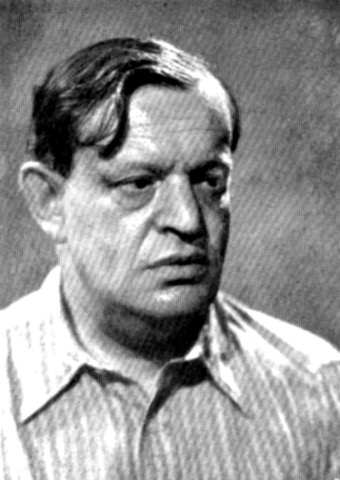

Network Science — スモールワールド
友達の友達はだいたい友達で、それでも世界の誰にでも数ステップで届く。両立しないはずの性質が、同じネットワークに共存していた。
Duncan Watts と Steven Strogatz が Nature 誌に「スモールワールド・ネットワーク」を発表。少数のランダムな近道が世界を縮めると数学的に示した。
1998年6月4日公開。同月10日に仏開催の FIFA ワールドカップが開幕し、6月1日にはフランクフルトで欧州中央銀行が発足していた。
Karinthy の空想(1929)、Milgram の実験(1967)、Guare の戯曲(1990)を経て、直感が数式になった年。
海外の空港のカウンターで、初対面の旅行者と立ち話になる。出身地が噛み合わず、大学の話になり、共通の教授の名前が出た瞬間、二人は声を上げて笑う。「なんだ、世界って本当に狭いな」。
こういう偶然は、誰もが少なくとも一度は経験している。そして話せば、周りも似た話を一つは持っている。偶然が繰り返されるなら、それはもう偶然ではない。
アマゾンの奥地に住む先住民。ローマ法王。深夜のマンハッタンを掃除する清掃員。あなたから見ればまったく別の世界に生きている人々——でも、知り合いの知り合いの知り合いを辿っていくと、そのいずれの人物にも、おそらく6人を超えない隔たりで届く。
この現象には名前がある。スモールワールド。それがなぜ成立するのか、長い間、誰も説明できていなかった。
「世界は狭い」という直感は、少数の近道が持つ力で説明できる。密に繋がりながら遠くへ一瞬で届くネットワークが、身の回りに満ちている。そのからくりを、自分の手で動かして確かめる。
1929年、ハンガリーの作家 フリジェシュ・カリンティFrigyes Karinthy
1887–1938年のハンガリーの作家・詩人・ユーモリスト。短編「Láncszemek(鎖)」で、後に「六次の隔たり」と呼ばれる発想を世界で初めて文章化した。は、短編集『すべては別のかたちで』を出した。その中の「鎖」という一篇で、彼はこんな遊びを提案する。地球上の誰でも良い、任意の一人を名指ししてくれ。自分はその人物に、手紙を五人の友人知人を経由して届けて見せる——と。
カリンティは賭け事のつもりで書いていない。蒸気船、電信、ラジオが張り巡らされ、世界が日ごとに縮んでいくことへの、詩人としての恐れを込めた随筆だった。「ヨーロッパの作家が、デトロイトのフォード工場で働くリベット工に、五人を超えずに繋がってしまう」。当時これは薄気味悪い予感で、数学ではなかった。
それから半世紀。この直感には二つの問題があった。ひとつは、本当にそうなっているのか誰も確かめていないこと。もうひとつは、もし本当なら、なぜそうなるのか誰も説明できないこと。後者の方がはるかに難しい。なぜなら、人間関係は直感的に矛盾する二つの性質を同時に持っているからだ。
図1 — 規則格子(リング格子)。16ノードが両隣2人ずつと繋がる。近傍は密だが、対角まで4ホップ要る。
一方の極極(きょく)
「両端」「最も端の状態」のこと。ここでは「一番規則正しい配置」と「一番ランダムな配置」という、ネットワークの両端の状態を指す。中間にあるのが「スモールワールド」。は規則格子だ。ムラのない格子状のつながり。近所どうしは密に繋がり、三角形が無数にできる。「友達の友達は高確率で友達である」という直感に合う(図1)。しかし代償として、遠くのノードにはいくつものステップを踏まないと届かない。端から端まで、ホップを律儀に重ねるしかない。
図2 — ランダムグラフ。エッジを一様乱数で張ると、どのノードからどこへも数ステップで届く。代わりに近所のまとまり(三角形)は崩れる。
もう一方の極はランダムグラフだ。エッジを無作為に張ると、どのノードからどのノードへも、驚くほど数ステップで届く(図2)。世界は縮む。しかし、近所のまとまりは消える。あなたの友達同士が互いを知っている、という確率は、一様乱数の前ではほぼゼロになる。
問題は、現実の人間関係がこの二つのどちらにも当てはまらないことだった。友達の友達はだいたい友達で、しかも世界の反対側にも数ステップで届く。直感としてはそうなのに、どの数理モデルもこの同時成立を再現できなかった。
図3 — 規則格子は クラスタ係数クラスタ係数 C
あるノードの近傍ノードどうしが互いに繋がっている割合の平均。1に近いほど「友達の友達は友達」。(C)が高く平均経路長平均経路長 L
全ノード対の間の最短ホップ数の平均。小さいほど「どこでも近い」。(L)も高い。ランダムグラフは両方とも低い。C 高 × L 低 の場所は、長く空白地帯だった。
図4 — 近所のエッジを一本だけ外して遠くへ張り替える。局所的にはクラスタが壊れるが、大域的にはそのノードに近道ができる。
1998年、コーネル大学の WattsDuncan J. Watts(ダンカン・ワッツ)
1971年生まれ。オーストラリア出身の物理学者・計算社会科学者。1998年当時、コーネル大学の応用数学博士課程の学生で27歳。元はコオロギの鳴き声同期を研究していた。後の章で詳しく紹介する。 と StrogatzSteven H. Strogatz(スティーブン・ストロガッツ)
1959年生まれ。コーネル大学の応用数学者で、Watts の指導教員。非線形動力学・同期化現象の権威。一般向け著書『SYNC』『Infinite Powers』でも知られる。後の章で詳しく紹介する。 の二人——応用数学を専門とする師弟ペアは、この問題に一つの操作を提案した。規則格子から始めて、各エッジを確率 p で、ランダムな相手に張り替える(図4)。p=0 なら元の規則格子、p=1 なら完全にランダム。途中の p は、その中間。二つの極の間を連続的に動かせるダイヤルを作ったのだ。
A sparing sprinkle of long-range edges transforms a lattice into a small world without much affecting the local clustering.
長距離エッジをほんの少し振りかければ、格子は小さな世界に変わる。近所のまとまりはほとんど損なわれないままで。
— Watts & Strogatz, Nature 393 (1998)
彼らがダイヤルを回して測ったのは、平均経路長 L と クラスタ係数 C の二つ。結果は意外だった。p をほんの少し上げただけで、L は崖のように落ち、C はほとんど動かない。両立しないと思われていた二つの性質は、p の広い中間領域で同時に成立した。
よくある誤解
「世界が狭い」のは、誰もが顔の広いハブを経由するから。
実際は
Watts–Strogatz モデルはハブを前提にしない。どのノードも同じ次数のまま、少数のランダムな張替えだけで世界は縮む。
よくある誤解
「6」という数はミルグラムが実測して確かめた。
実際は
1967年の元実験は、配った296通の手紙のうち届いたのは64通だけ。届かなかった鎖を無視した平均が「5.2人の仲介者(=鎖の長さ6)」。残りは最後まで評価されていない。
よくある誤解
SNS の普及で、世界は初めて狭くなった。
実際は
Facebook の実測で平均 3.57ホップ(2016)に縮んだのは事実だが、スモールワールド性そのものは人間ネットワークの昔からの性質。SNS は測り直したに過ぎない。
これから、あなたはスライダーを一本だけ動かす。p と書かれたつまみだ。p は「規則格子のエッジのうち、何割をランダムな相手に張り替えるか」を決める。p=0 で元の規則格子、p=1 で完全なランダム。間の値は、二つの極のどこかに位置する。
画面には20個のノードが円周上に並び、最初は両隣の2人ずつと繋がっている(つまり一人当たり4本のエッジ。これを次数 k=4と呼ぶ)。スライダーを動かすと、エッジの一部が赤い点線で別のノードへ飛ぶ。同時に、二つの数値がリアルタイムで計算される——平均経路長 L(任意の二人を選んだとき何ホップで届くかの平均)と、クラスタ係数 C(ある人の友達同士が互いに知り合いである割合の平均)。
スライダーの読み方
p
張替率
規則格子のエッジのうち、ランダムな相手に張り替える割合。0 〜 1 の値を取る。p=0.1 なら「全エッジの10%を遠くへ飛ばす」。
L
平均経路長
どの二人を選んでも何ホップで辿れるか、その平均。小さいほど「世界が狭い」。リング格子では大きく、ランダムでは小さい。
C
クラスタ係数
「友達の友達は友達」である割合の平均。1 に近いほど近所のまとまりが強い。リング格子では高く、ランダムでは低い。
ルールは一つだけ。L と C が同時に変わる瞬間を見つけてほしい。特に、p=0.01 から p=0.1 の狭い範囲に注意して欲しい。Watts と Strogatz が発見したのは、そこで起きる非対称——L だけが急に小さくなり、C はほとんど変わらない、という奇妙な振る舞いだった。
Small-World Rewiring Simulator
N=20 個のノード(人)が円周上に並び、両隣2人ずつと繋がっている。スライダー p でランダム張替え率を変えると、平均経路長 L と クラスタ係数 C がリアルタイムで再計算される。
見てほしいこと: p=0 から p=0.1 へ動かす間に、L(赤線)は急激に落ち、C(緑線)はほぼ水平のまま残る。この「谷間」が Watts–Strogatz が見つけたスモールワールド領域。
この問題に決着をつけたのは、社会学者ではなく、物理学者と応用数学者の師弟ペアだった。スライダーで遊んだあと、なぜ L は急落して C は持ちこたえるのか——その「なぜ」を解いた二人を紹介する。
Duncan J. Watts(1971–)
物理学者 / 計算社会科学者 — 当時 コーネル大学 博士課程
オーストラリア出身。海軍士官学校で物理を学んだ後、米コーネル大学院に進み、応用数学者ストロガッツのもとで博士課程を始めた。当初の研究テーマはコオロギの鳴き声の同期。観察を続けるうち「同期は結局ネットワーク構造の問題ではないか」と気づき、ストロガッツに相談したのが小世界研究の発端だった。当時27歳。1998年論文の筆頭著者で、後に Microsoft Research を経てペンシルベニア大学教授。
Steven H. Strogatz(1959–)
応用数学者 — コーネル大学 教授
米国の応用数学者。非線形動力学と同期化現象(蛍が一斉に光る、心拍細胞が揃う、橋が共振する)の世界的権威。Watts の指導教員として小世界モデルを共同で発表。一般向け著書『Sync』(邦訳『SYNC』)、『Infinite Powers』(邦訳『無限の力』)、ニューヨーク・タイムズ連載「The Elements of Math」などで、数学を一般読者に橋渡しする書き手としても知られる。1998年当時39歳。
この二人は、社会学の長年の問題を解こうと意気込んで研究を始めたわけではない。物理と数学の道具——同期化研究で培った「単純な規則の集合がどう全体を生むか」を捉える視点——を別の対象に向けただけだった。それが結果として、Karinthy が予感し、Milgram が測ろうとした問題に、初めて一行の数式と一本のスライダーを与えた。論文はわずか3ページ。Nature 史上最も引用された論文の一つになる。
まず L の落ち方。20ノードの規則格子では、反対側のノードに届くのに5ホップかかる。ここに1本だけ、環の反対側までエッジを張り替えてみよう。
図5 — 1本の近道(赤の点線)ができると、A→B の最短経路は5ホップから2ホップへ短縮される。しかも、他のペアの最短経路もこの近道を経由できる。効果は張替えられたエッジそのものを超えて伝播する。
1本の近道は、この2点の距離を縮めるだけではない。その近道を経由できる他のすべてのペアの距離も縮める。1本が、何十組の最短経路に効く。これが L の急落の正体だ。効果が乗算的に広がる。
一方、C が残る理由はもっと地味で美しい。クラスタ係数 C は、局所の三角形がどれだけ残っているかの指標で、各エッジの3辺のうちどれか一本が張替えられた時に初めて崩れる。規則格子の三角形が無事である確率は、きれいに (1−p)³ で表せる。
図6 — p=0.1 のとき、三角形は (1−0.1)³ = 0.729、つまりまだ約73%残っている。張替率10%では、大域的には世界が縮み、局所的にはまとまりがほぼ温存される。これが両立の正体。
L の急落は「1本の近道の効果が他のペアに波及する」からで、C の粘り強さは「三角形を壊すには3辺のうち1辺が当たる必要がある」から。両者は同じ操作(張替え)に対して、全く違う速度で反応する。Watts と Strogatz の洞察は、この非対称を数式で可視化したことだった。
そしてこのモデルは、人間関係だけの話ではなかった。彼らは論文の後半で、実在する3つのネットワークについて L と C を測っている。映画俳優の共演グラフ。米国西部の電力網。線虫 C. elegansC. elegans(カエノラブディティス・エレガンス)
1mmほどの線虫。神経細胞の数が302個と少なく、全てのニューロン接続(コネクトーム)が完全にマップされた唯一の多細胞生物。 の神経回路。いずれも、ランダムグラフに近い L を持ちながら、規則格子並みの C を保っていた。
These systems are like neither regular lattices nor random graphs. They lie in the middle — with shortcuts.
これらの系は、規則格子でもランダムグラフでもない。両者の中間——近道を伴った領域に住んでいる。
— Watts & Strogatz (1998)
俳優は出演作を通じた地元クラスタを持ちつつ、稀に海外製作に参加して遠方へ橋を架ける。電力網は地理的に隣接する変電所と繋がりながら、長距離送電線で州を跨ぐ。線虫の神経は同じ機能群で密集しつつ、稀に長距離の軸索で脳の反対側と話す。どれも、少数の近道を持つ規則性だった。

Karinthy(1938)👀 試しに辿ってみる
スモールワールドの主張は「全くの他人にも、5〜6人辿れば届く」というもの。下のカードをクリックすると、あなたから「遠そうに見える人」までのありえそうな鎖の例が展開する。
アマゾンの先住民
雨林の集落で暮らす長老
届いた。約 5 ステップ。
ローマ法王
バチカンの最高位聖職者
届いた。約 6 ステップ。
松本人志
日本のトップ芸人(水曜日のダウンタウン参照)
届いた。約 5 ステップ。
NBA の現役選手
アメリカで戦うトッププレイヤー
届いた。約 5 ステップ。
※ 上の鎖はあくまで「ありえそうな例」であり、特定の個人に届くことを保証するものではない。重要なのは「距離は驚くほど短い」という構造的事実の方。Watts–Strogatz が示したのは、こういう短い鎖が現実に存在しうる理由だった。
「世界は狭い」と私たちが感じる時、想像しているのはたいてい「誰もが顔が広いから」だ。だが Watts–Strogatz が示したのは、ハブは不要だったという事実だ。全員が同じ次数でも、ごくわずかな「普段の縁の外」に伸びるエッジさえあれば、世界は十分に縮む。
これは私たち一人ひとりの振る舞いへの示唆でもある。自分の人間関係を地元の稠密さから測ると、どうしても「狭いコミュニティの中で閉じている」ように見える。しかし実際は、時おり遠くに張る一本の線が、自分自身を含むコミュニティ全員の距離を縮めている。密度と遠方性のトレードオフは、多くの場合、幻想だ。
I am bound to everyone on this planet by a trail of six people.
私は地球上の誰とでも、たった六人の鎖で繋がっている。
— Ouisa, in John Guare『Six Degrees of Separation』(1990)
このモデルはその後、脳のニューロン配線、タンパク質の相互作用ネットワーク、Web のハイパーリンク、電力網の停電伝播まで、あらゆる系で検証された。「規則 + 少数の近道」は、複雑系に共通するアーキテクチャだったことが明らかになっていく。1998年のわずか3ページの論文は、Natureで最も引用された論文の一つとなり、Watts と Strogatz が想像した以上に射程の長い発見になった。
文化への登場
Six Degrees of Kevin Bacon(1994〜)
米国の学生三人が考案した映画俳優の連鎖ゲーム。ケヴィン・ベーコンから任意の俳優まで、共演作を辿って何ホップで届くかを競う。Watts と Strogatz が論文で使った映画俳優の共演グラフは、このゲームを知っていたからこそ選ばれた例だった。オンライン版の Oracle of BaconOracle of Bacon
バージニア大学の Brett Tjaden が1996年に立ち上げた Web サービス。俳優名を入れると Kevin Bacon までの最短経路と「Bacon 数」を返す。 は今も稼働中で、平均 Bacon 数は約 2.9。
ジョン・グアレの戯曲『Six Degrees of Separation』(1990)
ニューヨークの富裕層夫婦が、シドニー・ポワチエの息子だと名乗る青年に騙される実話を下敷きにした会話劇。劇中の有名な台詞「私たちは皆、六人しか隔たっていない。大統領とも、ヴェネツィアのゴンドラ漕ぎとも」が、この概念を英語圏に定着させた。
LinkedIn の「n次のつながり」表示
LinkedIn のプロフィール画面に表示される「1st / 2nd / 3rd+」は、Milgram と Watts–Strogatz を直接の思想的祖父として持つ UI。あなたと目標人物の間の最短経路の長さを、そのまま表示している。
『水曜日のダウンタウン』数珠つなぎ系企画(2014, 2018, 2023)
日本の TBS 系バラエティで何度か検証された企画。2014年には「数珠つなぎ6人で誰の電話番号にでもたどり着ける説」、2018年には「知り合いで一番面白い人を数珠つなぎすると最終的に松本人志にたどり着く説」が放送された。ミルグラム実験の現代版を、芸能界という閉じたネットワークで再現したものと読める。届くか届かないかというより、「6人くらい辿れば本当に届く」という直感が一般人の感覚として定着していること自体が、Karinthy の予感を裏付けている。
Collective dynamics of 'small-world' networks
張替率 p のダイヤル一本で、規則格子からランダムグラフまでを連続的に繋ぎ、中間に高 C × 低 L の領域(スモールワールド)を発見した3ページの論文。映画俳優、電力網、C. elegans 神経回路の3例で実測した。この記事の Est. 典拠。
ネブラスカとボストンから手紙を転送させる元実験。届いたのは64通のみ、平均仲介者数5.2。ミルグラム本人は一度も「six degrees」とは書いていない。1969年に Travers との共著で Sociometry にも再録。
Láncszemek(鎖)
「六次の隔たり」の発想を世界で初めて文章化したハンガリー語短編。詩的な空想として書かれ、数式は一つもない。英訳は Newman, Barabási, Watts 編 The Structure and Dynamics of Networks(2006)に収録。
ミルグラム実験の方法論的欠陥と完走率の低さを指摘し、「six degrees」が科学的に十分実証されていない俗説化した概念であることを論じた再検証論文。数字そのものへの距離を取り直すために重要。
Planetary-Scale Views on an Instant-Messaging Network
MSN メッセンジャー 2006 年6月の匿名化データ(2.4億ユーザー、300億会話)を解析。ノード1.8億、エッジ13億のグラフで平均距離 6.6 ホップ。当時世界最大の社会ネットワーク実測。
Three and a half degrees of separation
Facebook の15.9億ユーザーで平均距離を計測し、3.57 という数値を得た。2011 年の3.74から5年で縮んだ。米国内では3.46。実測による世界の狭さの現在地。
Six Degrees: The Science of a Connected Age
Watts 本人がスモールワールド研究の背景と、その後のネットワーク科学の展開を一般読者向けに書き直した本。自身の博士論文(1999年)からの発展を辿れる。邦訳『スモールワールド・ネットワーク——世界をつなぐ「6次」の科学』(阪急コミュニケーションズ)あり。